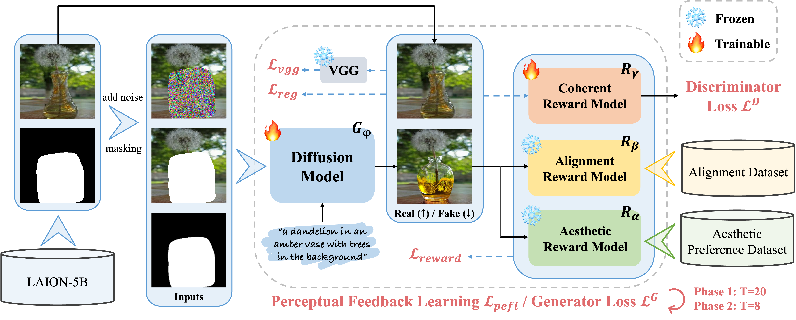
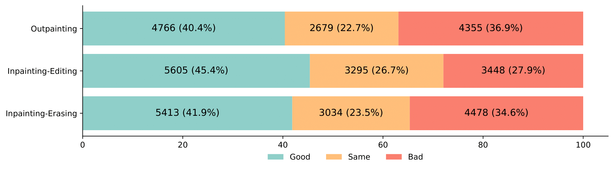

ByteEdit
Boost, Comply and Accelerate Generative Image Editing
Inpainting Demo

Outpainting Demo


Abstract
Recent advancements in diffusion-based generative image editing have sparked a profound revolution, reshaping the landscape of image outpainting and inpainting tasks. Despite these strides, the field grapples with inherent challenges, including: i) inferior quality; ii) poor consistency; iii) insufficient instrcution adherence; iv) suboptimal generation efficiency. To address these obstacles, we present ByteEdit, an innovative feedback learning framework meticulously designed to Boost, Comply, and Accelerate Generative Image Editing tasks. ByteEdit seamlessly integrates image reward models dedicated to enhancing aesthetics and image-text alignment, while also introducing a dense, pixel-level reward model tailored to foster coherence in the output. Furthermore, we propose a pioneering adversarial and progressive feedback learning strategy to expedite the model's inference speed. Through extensive large-scale user evaluations, we demonstrate that ByteEdit surpasses leading generative image editing products, including Adobe, Canva, and MeiTu, in both generation quality and consistency. ByteEdit-Outpainting exhibits a remarkable enhancement of 388% and 135% in quality and consistency, respectively, when compared to the baseline model. Experiments also verfied that our acceleration models maintains excellent performance results in terms of quality and consistency.
Examples
Pipeline
ByteEdit formulates a comprehensive feedback learning framework that facilitating aesthetics, image-text matching, consistency and inference speed.
Human Evaluation
To further investigate the gap between Adobe and our proposed ByteEdit, we solicited feedback from a large number of volunteers on the images generated by both, and the results are illustrated in the figure below. More than 12,000 samples are collected for each task. "Good" indicates the generated images by our ByteEdit is preferred and vice versa. The results show that users generally found the images we generated to be more natural in overall perception. Our GSB superiority percentages (i.e. (G+S)/(S+B) * 100%) on three different tasks are 105%, 163%, and 112%, respectively.
Human Perference Evaluation on our proposed PeFL and Acceleration. Our proposed PeFL significantly improves the generation quality, outperforming the baseline on all different tasks. Especially in the outpainting task with PeFL, our method exceeds the baseline by about 60% in terms of structure and aesthetic. Moreover, our model has no significant loss in either consistency or structure and aesthetic with the progressive training strategy. To our surprise, we have even achieved both increasing speed and quality in the outpainting and inpainting-editing tasks.
BibTex
@misc{ren2024byteedit,
title={ByteEdit: Boost, Comply and Accelerate Generative Image Editing},
author={Yuxi Ren and Jie Wu and Yanzuo Lu and Huafeng Kuang and Xin Xia and Xionghui Wang and Qianqian Wang and Yixing Zhu and Pan Xie and Shiyin Wang and Xuefeng Xiao and Yitong Wang and Min Zheng and Lean Fu},
year={2024},
eprint={2404.04860},
archivePrefix={arXiv},
primaryClass={cs.CV}
}